А
Адам · владелец
Закупает, принимает товар, проверяет деньги и прибыль.
Важно: достоверные остатки и финансовый результат.Основные расчёты работают. Перед ежедневной работой нужно закрыть риски данных, доступа и исключений в заказах.
Закупает, принимает товар, проверяет деньги и прибыль.
Важно: достоверные остатки и финансовый результат.Находит вариант, продаёт, принимает оплату и выдаёт заказ.
Важно: быстро выполнить операцию и не ошибиться.Две роли моделировались на тестовых данных. Это не две существующие учётные записи. Рабочие данные магазина не использовались. Проверена опубликованная версия 051eb48.
Сейчас каждый размер и цвет приходится заполнять отдельно.
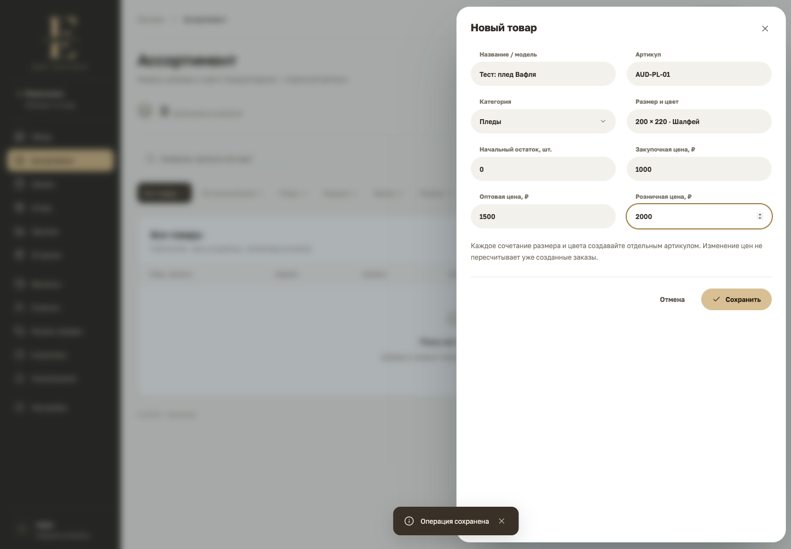
Открыть скриншотРеальная форма · 8 полей на один артикул
Excel / CSV или вставка строк из таблицы.
Артикул, модель, размер, цвет, три цены и остаток.
Дубли, пустые цены и некорректные количества подсветить.
Предложение к разработке. Excel-импорта в текущей CRM ещё нет. В файле есть пустой лист и вымышленный пример на 12 вариантов.
Так я предлагаю добавлять пледы вручную, когда готовой таблицы нет.
| Размер / цвет | Шалфей | Молочный | Песочный | Графит |
|---|---|---|---|---|
| 150 × 200 | 10 шт. | 8 шт. | 6 шт. | 4 шт. |
| 180 × 200 | 8 шт. | 10 шт. | 4 шт. | 6 шт. |
| 200 × 220 | 12 шт. | 10 шт. | 8 шт. | 6 шт. |
Для похожего товара менять только отличия.
Искать существующий SKU; неизвестный код предложит создать товар.
Распознать в черновик. Цены и остатки записывать только после проверки.
Пример условный. Начальные остатки вводятся при запуске; последующие поставки оформляются приёмкой, чтобы не задвоить товар.
Сейчас в программе нет входа, роли и автора операции.
| Действие | Адам | Менеджер |
|---|---|---|
| Создать заказ, найти товар | Можно | Можно |
| Принять оплату и отгрузить | Можно | По правилам магазина |
| Видеть закупочную цену и всю прибыль | Можно | По умолчанию скрыто |
| Менять себестоимость, сверять деньги | Можно, с журналом | Нельзя |
| Подтвердить возврат / списание | Можно | Запрос владельцу |
| Заменить базу из копии | Только администратор | Нельзя |
Один магазин на двух устройствах сейчас превращается в два независимых учёта.
Спрятать кнопки недостаточно. Нужны общая база, доступ к операциям и автор изменений.
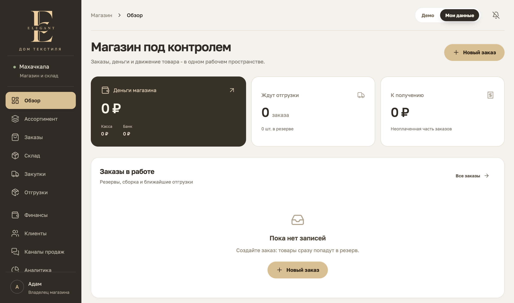
Открыть скриншотПодтверждено в отдельном тестовом браузере.
10 шт. × 1 100 ₽
10 шт. × 3 000 ₽
9 записей в финансах и 4 движения склада остались без изменений.
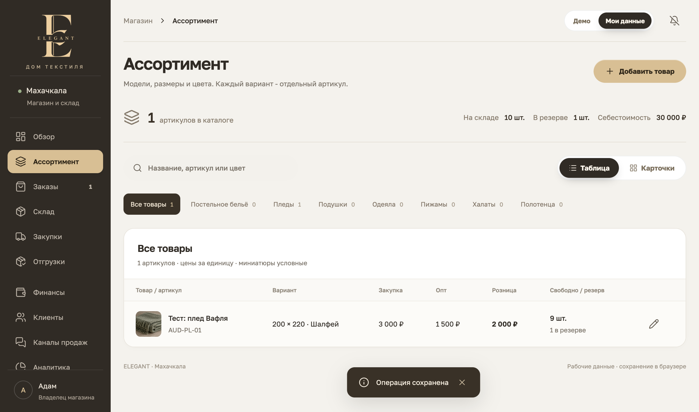
Открыть скриншотИсправить: отделить цену следующей закупки от учётной себестоимости. Переоценку проводить отдельным документом с причиной и автором.
Форма автоматически добавляет всю поставку.
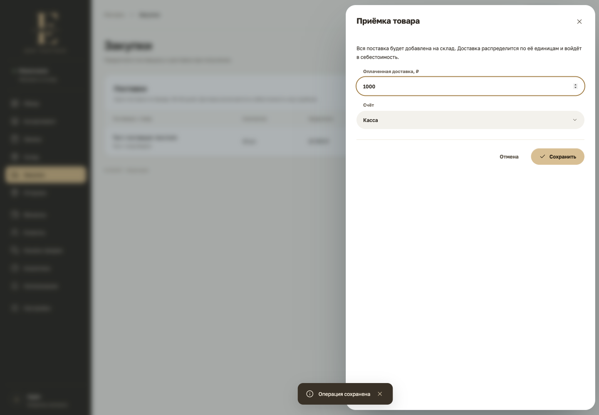
Открыть скриншотНет поля «Фактически принято»
Это макет нужного поведения, не результат текущей CRM.
Оставить: предоплату товара и включение доставки в себестоимость. Эти расчёты прошли проверку.
Карточка клиента содержит «Опт», но новый заказ открывается как «Розница».
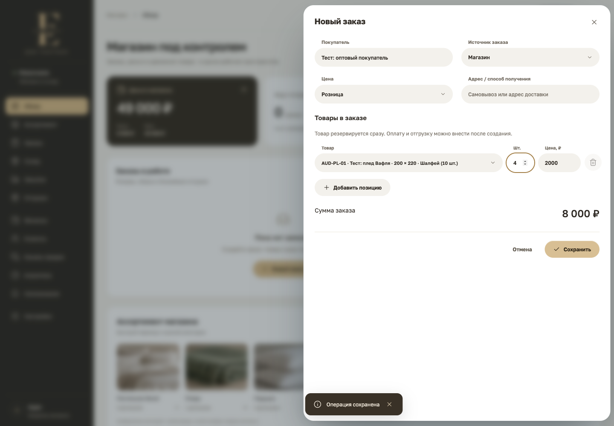
Открыть скриншотРеальный тест: 4 пледа по 2 000 ₽
Исправить: клиент выбирается по ID; его тип цены подставляется автоматически. Изменение условий показывается продавцу явно.
После ручного переключения на «Опт» расчёт 4 × 1 500 ₽ корректен. Проблема в автоматизации, не в арифметике.
Отдали 1 плед из 4. Покупатель хочет вернуть его и отказаться от остальных.
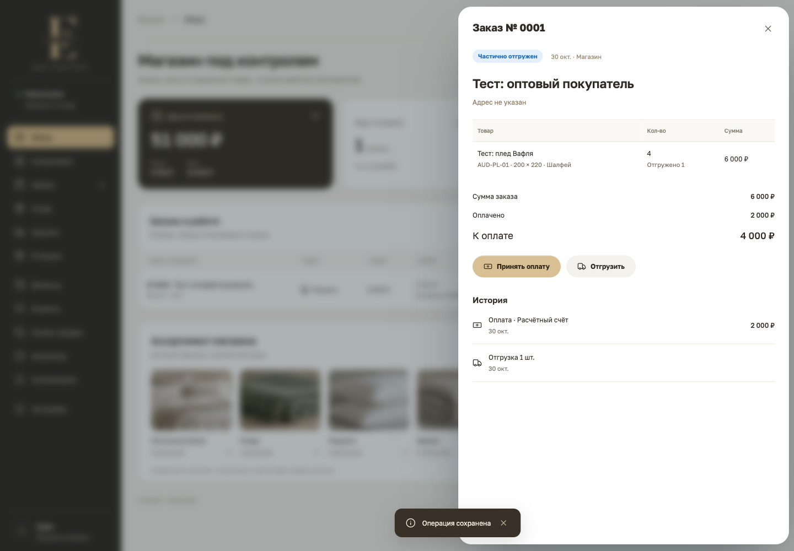
Открыть скриншотВ карточке только «Принять оплату» и «Отгрузить»
Количество, состояние, сумма возврата и счёт.
Снять резерв с ещё не отгруженных товаров.
Возврат старого варианта + резерв нового.
Полный возврат полностью отгруженного заказа проверен: склад и деньги восстановились правильно.
Не обходить ограничение фиктивной отгрузкой.
Новый покупатель из заказа не создаётся в клиентах; черновик исчезает после закрытия.
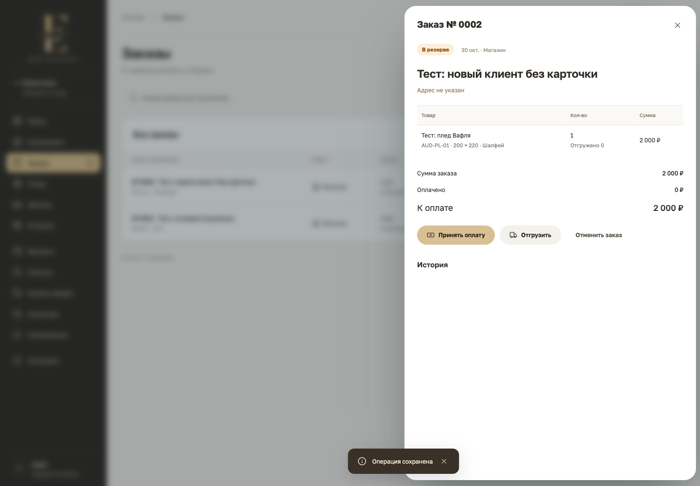
Открыть скриншотДобавить телефон и быстрое создание клиента прямо в продаже.
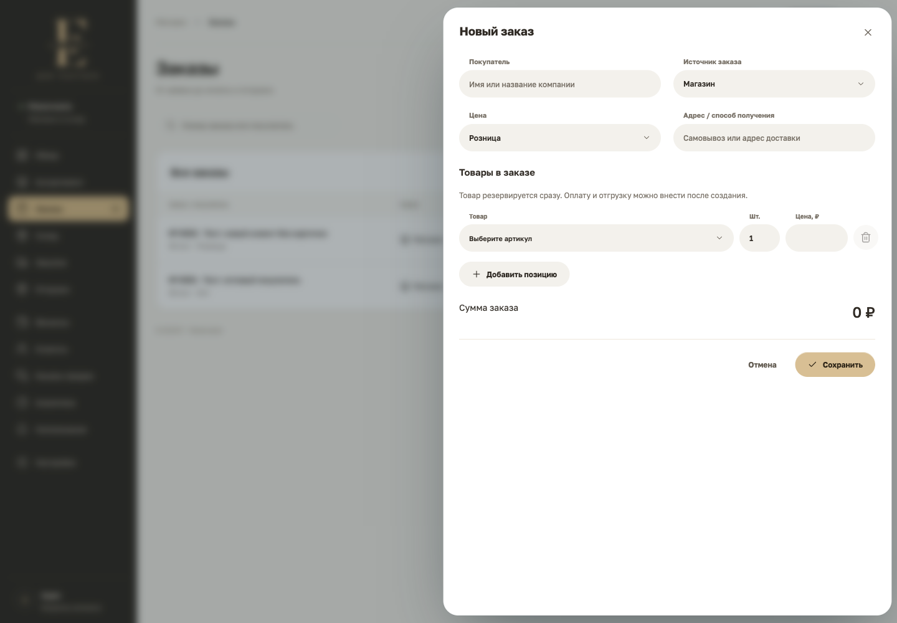
Открыть скриншотСохранять незавершённый заказ. Перед потерей изменений спрашивать.
Ускорить продажу: искать товар по названию, артикулу или сканированию; показывать размер, цвет и свободный остаток в одном результате.
Арифметика верная, но владельцу не хватает периода и результата после расходов.
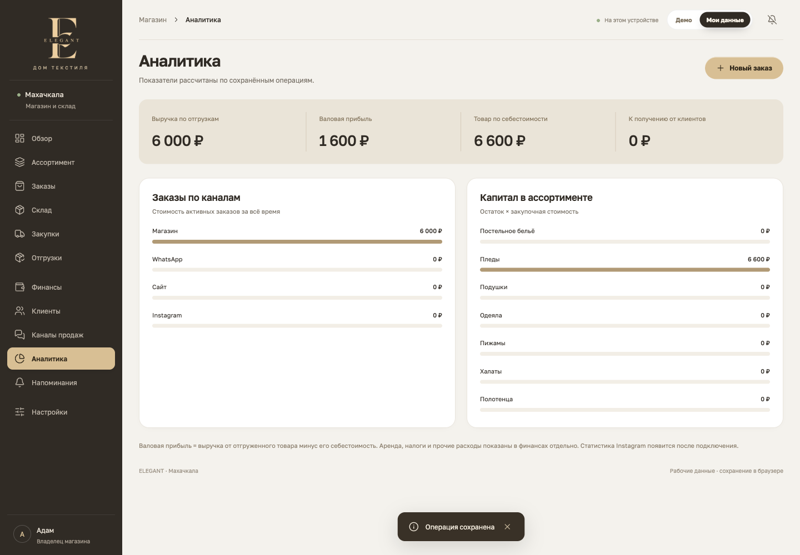
Открыть скриншотДобавить: сегодня / месяц / свой период; отдельно денежный поток, валовую прибыль и результат с расходами. На скрине корректные 1 600 ₽ валовой прибыли; результат 600 ₽ интерфейс не показывает.
Тестовая продажа до полного возврата. Это управленческий пример, не бухгалтерский или налоговый отчёт.
Повреждение локальной записи смоделировано в изолированном тестовом профиле.
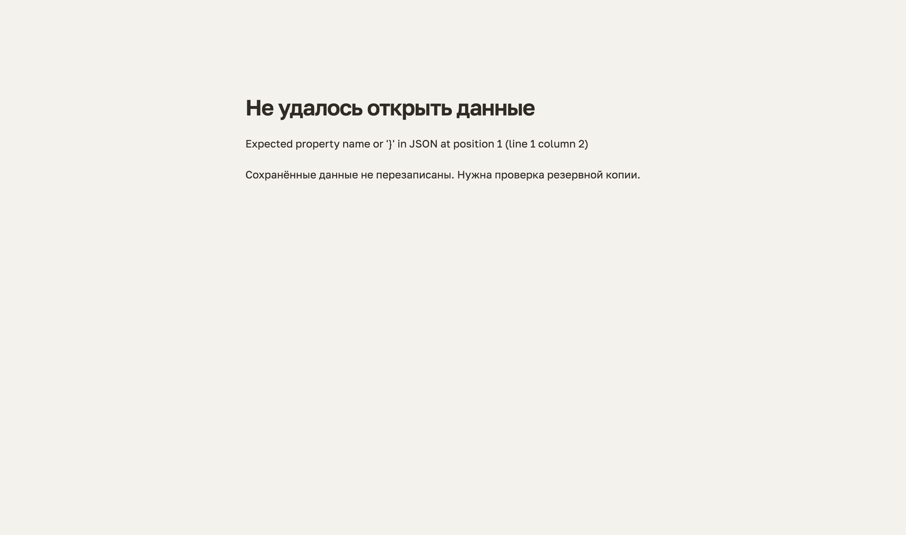
Открыть скриншотОстаётся техническое сообщение на английском. Ни импорт, ни настройки недоступны.
Сохранить повреждённый файл, выбрать резервную копию и восстановить. Добавить автоматические версии на сервере.
Обычный экспорт и импорт JSON из настроек прошли проверку. При этом очистка хранилища браузера без копии означает потерю локальных данных.
Сократить шум, сохранив полезные инструменты.
Обзор владельца
Деньги · долги · закупки · дефицит · задачи
Рабочая смена менеджера
Найти товар · продать · принять оплату · выдать заказ
Это предложенная структура. Разделы текущей CRM в ходе аудита не удалялись. Фото не запрещены: реальные фото товара полезны в карточке и подборе.
Проверены экраны 390 × 844 и ноутбук 1440 × 1000. Это эмуляция Chromium, не физический телефон.
Горизонтального переполнения всей страницы и панели формы в проверенных состояниях нет.
При закрытом меню первый Tab попадает на логотип за пределами экрана.
Заголовки таблицы около 3,6:1; требуется 4,5:1 для обычного текста. Часть рабочих подписей 9-10 px.
Атлас иллюстраций ~3 МБ, логотип ~428 КБ. Сжать и отложить ненужную графику. Скорость на мобильной сети отдельно не измерялась.
Текущий экран честно показывает, что обмен с внешними сервисами отсутствует.
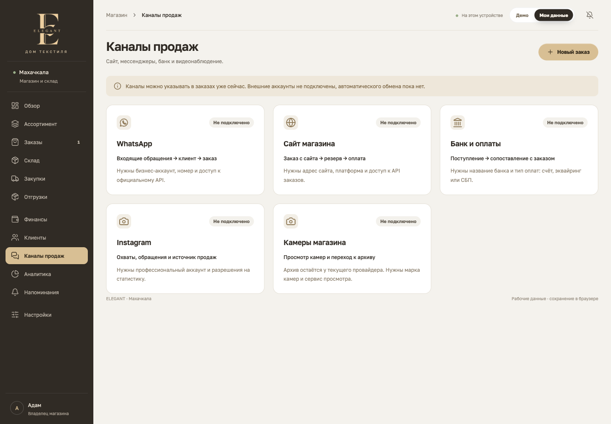
Открыть скриншотНе проверялись реальные банковские события, отправка сообщений, API аккаунтов и видеопотоки: доступов нет. Не заменять статус «Не подключено» имитацией данных.
Не расширять меню, пока основные сценарии не проходят без обходных действий.
Общая база и роли. Журнал. Резервные копии и восстановление. Защита себестоимости.
Готово, когда:Два устройства видят один заказ, запрещённое действие отклоняется, копия восстанавливается.
Excel-импорт, варианты и дублирование. Частичная приёмка, возврат, обмен и инвентаризация.
Готово, когда:Прайс загружается без дублей; 8 из 10 приняты верно; заказ можно отменить и вернуть по строкам.
Клиент и его цены, черновики, поиск/сканер, отчёты за период и подключение реальных сервисов.
Готово, когда:Продавец завершает продажу без повторного ввода, владелец видит результат за выбранный месяц.
Сохранить визуальную основу Print 360 и рабочую арифметику. Следующую разработку направить на надёжный товарный и денежный учёт.
Аудит не является подтверждением готовности к эксплуатации. В этой работе CRM не исправлялась; проверялись сценарии и готовился план.
Подробности для разработки. Основные выводы - на экранах выше.
| Приоритет | Находка и доказательство | Как проверить исправление |
|---|---|---|
| P0 | Нет общей базы и настоящих ролей На другом профиле браузера рабочая база пустая. На одном устройстве любой оператор видит финансы и закупочную стоимость. | Владелец и менеджер видят один заказ на двух устройствах; сервер отклоняет запрещённое действие. |
| P1 | Цена меняет оценку всего остатка без документа 10 пледов × 1 100 ₽ стали 10 × 3 000 ₽. Число денежных операций и движений не изменилось. | Изменение прайса не переоценивает текущий остаток; корректировка содержит причину и автора. |
| P1 | Нельзя принять часть поставки В форме есть доставка и счёт, но нет количества фактически полученных единиц. | Из 10 заказанных принять 8: склад +8, в пути 2; повторная приёмка не дублирует приход. |
| P1 | Частичный заказ нельзя вернуть или отменить остаток После отгрузки 1 из 4 доступны только оплата и отгрузка. | Вернуть 1 переданную единицу и отменить 3 зарезервированные без фиктивной отгрузки. |
| P1 | Условия оптового клиента не применяются Клиент сохранён как оптовый; форма всё равно предлагает розницу: 8 000 вместо 6 000 ₽ за 4 шт. | Выбор оптовика подставляет 1 500 ₽/шт.; менеджер видит причину изменения цены. |
| P1 | Новый покупатель не попадает в клиентскую базу После заказа по новому имени число карточек не увеличилось, clientId пуст. Телефона в форме заказа нет. | Заказ и карточка клиента связаны по ID; история не теряется при изменении имени. |
| P1 | При повреждении данных нет пути к импорту На экране ошибки отсутствуют кнопки загрузки копии или выгрузки повреждённых данных. | Загрузить исправную копию можно с экрана ошибки, сохранив исходные данные. |
| P1 | Нет доступного сценария инвентаризации и списания В складе доступны остатки и закупка; исправить расхождение, брак или пересортицу через документ нельзя. | После пересчёта 9 вместо 10 фиксируются -1, причина и автор, а резерв проверяется. |
| P1 | Нет массового ввода каталога Форма содержит 8 полей на один SKU. Excel/CSV, дублирование и матрица вариантов отсутствуют. | 12 вариантов создаются одной пачкой; дубль артикула блокируется, повторный импорт не удваивает остатки. |
| P2 | Закрытие формы стирает несохранённый заказ Ввел покупателя и товар, закрыл панель, открыл заново: поля пусты. | Черновик восстанавливается после закрытия формы и обновления страницы. |
| P2 | Нет периода и отчёта о результате с расходами Выручка и валовая прибыль за всё время. После расхода 1 000 ₽ валовая прибыль 1 600 ₽ закономерно не меняется; чистый результат не показан. | Для тестовой продажи результат после расхода 600 ₽; касса, прибыль и стоимость склада не смешиваются. |
| P2 | Мелкие подписи и низкий контраст Заголовки таблицы: около 3,6:1; подпись страницы: 4,2:1. Некоторые рабочие подписи 9-10 px. | Рабочий текст не ниже 4,5:1; форма и таблица читаются на ноутбуке без масштабирования. |
| P2 | Фокус попадает в закрытое меню Первый Tab фокусирует невидимый логотип: x=-217, правая граница -13 px. | При закрытом меню Tab перемещается только по видимым элементам. |
| P2 | Сервисы пока не подключены Нет автоматического получения заказов сайта, банковских платежей, сообщений и статистики Instagram. | Повторное событие не дублирует заказ/платёж; сбой виден в журнале. |
| P2 | Двенадцать разделов одинаково важны для всех Владельцу и будущему продавцу показывается одно и то же меню; фотокатегории занимают место рабочего обзора. | Менеджер открывает поиск, продажу и отгрузку из своего рабочего экрана без финансовых разделов. |
| P2 | Декоративные иллюстрации тяжелее кода Атлас категорий около 3 МБ, логотип около 428 КБ. Это размеры файлов, не замер медленного интернета. | Сопоставить вес и загрузку до/после на одинаковом устройстве; сохранить качество. |
| Область | Оценка / 4 | Основание |
|---|---|---|
| Доступность | 2 | Есть подписи полей и Esc; подтверждены низкий контраст и невидимый фокус. |
| Производительность | 2 | Локальные шрифты; тяжёлый PNG-атлас и полные списки. Нагрузочный SLA не проверялся. |
| Оформление | 3 | Общий стиль и токены, часть цветов жёстко задана. Тёмная тема не заявлена. |
| Адаптивность | 2 | Проверенные экраны помещаются; мелкие подписи и мобильная клавиатура требуют исправления. |
| Целостность реализации | 2 | Визуально согласовано; ролевые сценарии и исключения учёта не завершены. |
11/20 - экспертная оценка интерфейса, не измерение качества бизнеса. Порог контраста: W3C, WCAG 2.2, 1.4.3. Детектор выдал 47 сигналов: 13 о контрасте, 29 о мелком функциональном тексте, 3 о мелком тексте, 2 стилевых. Повторы объединены; фирменная кремовая палитра и уместная анимация не признаны дефектами.
Один основной агент. Две моделируемые роли: владелец из брифа и будущий менеджер. Публичная версия 051eb48, Chromium, отдельные тестовые профили. Скриншоты показывают реальные состояния, макеты решений помечены отдельно. Финансовые суммы вымышленные.
Проверены UX, бизнес-путь, локальные данные, арифметика, восстановление, адаптивность и доступность. Это не пентест и не сертификация бухгалтерского учёта. Нет серверной системы и интеграционных доступов; офлайн-работа, реальные камеры, фискализация, промышленная нагрузка, VoiceOver, физический телефон и реальные сотрудники не проверялись. Скорость работы человека и эффект будущего импорта не измерялись.
Файл PRODUCT/DESIGN у старой версии частично устарел; выводы основаны на актуальном экране и коде новой версии. Автозагрузка контекста Impeccable не сработала; детектор через bash выполнен успешно.
P0 - блокер совместного запуска. P1 - до ежедневной работы. P2 - следующий этап. Скачать список задач